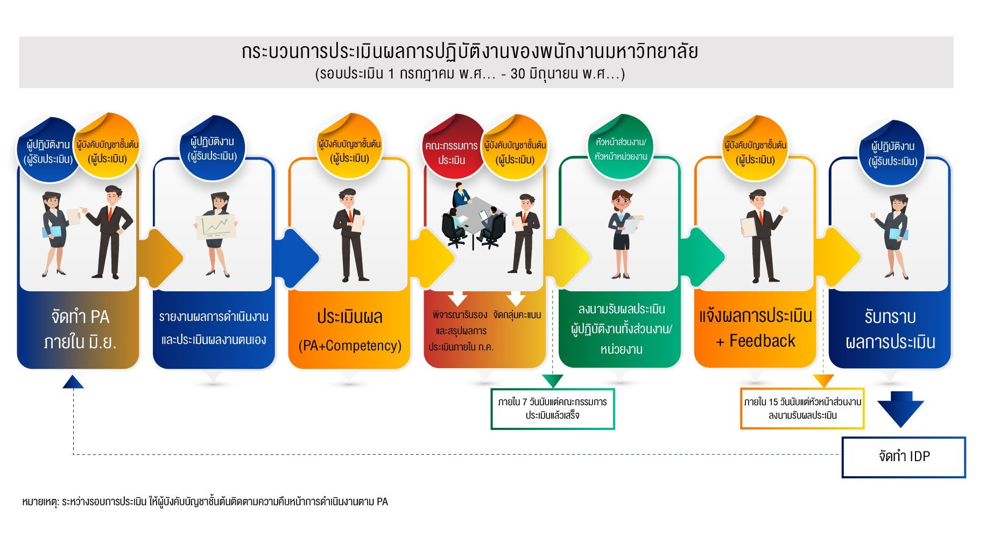

โปรแกรมประเมินผลการปฏิบัติงาน ทั้งวงจร
หัวข้อในแบบประเมิน
ข้อย่อยในภาระงาน (ตัวอย่างที่เคยใช้เขียนโปรแกรม) เป็นแค่ หัวข้อหนึ่งที่ต้องให้คะแนน ไม่ใช่ทั้งโปรแกรม โปรแกรมมีข้อตกลง ตัวชี้วัด สมรรถนะ การอนุมัติ รับทราบ และแผนพัฒนา
เปิดสรุปทีละเอกสาร
UM-01 Competency Online
ผู้ประเมินให้คะแนนสมรรถนะ CC / FC / MC ในระบบ e-PA เก่า
คู่มือ 2 · 65 หน้าUM-03 Performance Agreement
ผู้รับการประเมินจัดทำข้อตกลง หน้า A / หน้า B น้ำหนักรวมต้องได้ 100
คำแนะนำ · ชุดเดียวกันPMS ระบบบริหารผลการปฏิบัติงาน
PMS1 + PMS2 เป็นสไลด์ชุดเดียวกัน: จัดทำ PA, ประธานอนุมัติ, รายงานผล, CC, รับทราบ, IDP, รายงาน
เดโมโปรแกรมเปิดเดโม PMS 9 โมดูล
น.ส.พรทิพา เซี่ยงฉิน · อาจารย์ · คำนวณหน่วย/คะแนนจากประกาศคณะฯ อัตโนมัติ
สองระบบนี้คนละโปรแกรม
e-Performance Appraisal
http://e-performance.mahidol
Header น้ำเงิน ตราพระเกี้ยว ตารางสีฟ้า-เขียว ปุ่ม Dialog ยืนยันทีละขั้น
คู่มือ UM-01 (ผู้ประเมิน) + UM-03 (ผู้รับการประเมิน)
PMS ระบบบริหารผลการปฏิบัติงาน
https://mypms.mahidol.ac.th/
เว็บสมัยใหม่ เมนูซ้าย KPI, ชุดประเมิน PA / CC / IDP / FC / MC
คำแนะนำ PMS1 + PMS2 เป็นสไลด์ชุดเดียวกัน

วงจรการทำงานทั้งระบบ
- ยืนยันประวัติส่วนตัว แล้วจัดทำข้อตกลง (น้ำหนัก 100 + เกณฑ์ 5 ระดับ)
- หัวหน้าอนุมัติ หรือส่งกลับแก้ พร้อมเหตุผล
- ปลายรอบรายงานผล แนบหลักฐาน ประเมินตนเอง — ส่งแล้วแก้ไม่ได้
- กรรมการให้ความเห็น ประธานให้คะแนน (ตัวอย่าง PMS: PA 80 + CC 20)
- รับทราบผล หรือกดไม่เห็นด้วยพร้อมเหตุผล
- จัดทำ IDP ไม่เกินประมาณ 2 รายการต่อปี วิธีพัฒนา 70 / 20 / 10
เปิดไฟล์นี้ในเบราว์เซอร์ได้เลย หรือไล่จากเมนูน้ำเงินด้านบนทีละเอกสาร รายละเอียดตัวหนังสือยาวอยู่ที่ docs/pa-manuals-digest.md